Created: 07/20/2012
Last Update : 08/21/2012
By: SpadeInvaders
Thank you for purchasing our theme. If you have any questions that are beyond the scope of this help file, please feel free to email via our user page contact form here. Thanks so much!
First of all you must have a working version of WordPress (at least Wordpress 3.3) already installed. If you need help installing Wordpress please see the Wordpress Codex: http://codex.wordpress.org/Installing_WordPress
Unzip the file you download after purchase. The following files and folders will be in the unzipped file:
The theme files can be uploaded in two ways:
- FTP Upload: Upload the non-zipped elastico folder into the /wp-content/themes/ folder on your server using your FTP program
- WordPress Upload: In the WordPress admin go to Appearance > Install Themes > Upload. Browse the zipped theme folder elastico.zip and Click "Install Now".
Once the theme is uploaded, go to Appearance > Themes and activate the theme.
The theme comes with a simple to use administration panel where you can configure a number of options to taylor the theme to fit your needs.
You can access it by navigating to Appearance > Theme Options.
Every option in that panel comes with an instruction next to it, so you can find out easily its usage.
General Settings : Here you have options to upload your own logo and favicon, insert your Google Analytics and disable right click.
Styling Options : Here you can set the link hover color and insert some custom CSS code.
Portfolio Settings : Here you can configure the portfolio page settings.
Gallery Settings : Here you can configure the gallery listing page settings.
Contact Infos : Here you can enter address, phone, fax, email and configure your Google Map.
Sidebar Settings : Here you can enable/disable the overlay widgets panel and set the copyright information.
Social Settings : Here you can add your social networks links.
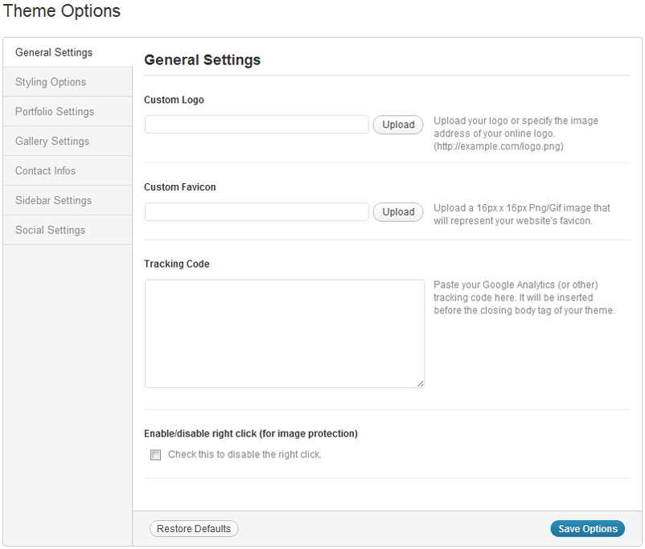
By going to Appearance > Theme Options > Portfolio Settings you can configure your portfolio page.
Since elastico v1.1, you can use a "Load More" button if you need to display a lot of portfolio items.
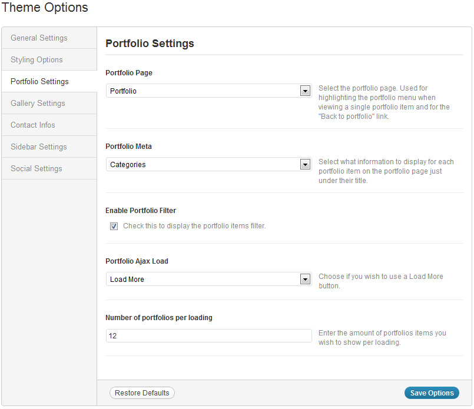
Adding Portfolio ItemsTo add a new portfolio item, navigate to Portfolios > Add New. Here you can add the title of the project, a description in the main text editor, enter project details (client, date, url), upload medias, type an excerpt and assign various categories.
Set preview imageYou have to set a "featured image" to each portfolio item that will be diplayed on the portfolio page. To do so, upload an image and set it as featured image. The image will be automatically cropped to the appropriate dimensions. But if you want to control exactly how it displays, upload a featured image of 400px x 225px.
Enter the project detailsYou can specify the client, date and url of the project.
Set which type of portfolio you want to display, you have the choice between Images, Video & Audio.
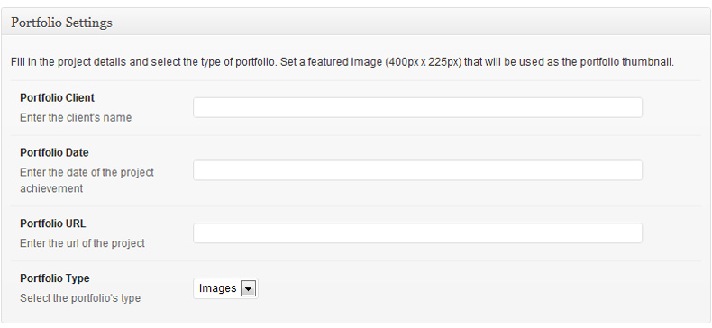
Adding ImagesA portfolio item can display a slider with an unlimited number of images by retrieving all the images attached to the portfolio post except the featured image.
When selecting the Images portfolio type, an Images Settings box appears.
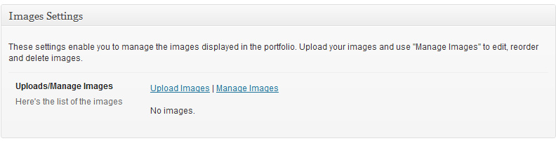
Simply upload your images using the "Upload Images" link.
For each slide you can add a caption by entering some text in the caption input.
The slider enables you to display different image formats (16:9, 4:3, portrait ...) : depending on the width/height ratio of each image, the image in the slider will automatically occupy a certain percentage of the space.
If you want to enter a specific percentage for each image and override the default value, enter a number between 1 and 100 in the percentage input.
(Note: you will only be able to see this custom input once you have published the portfolio item).
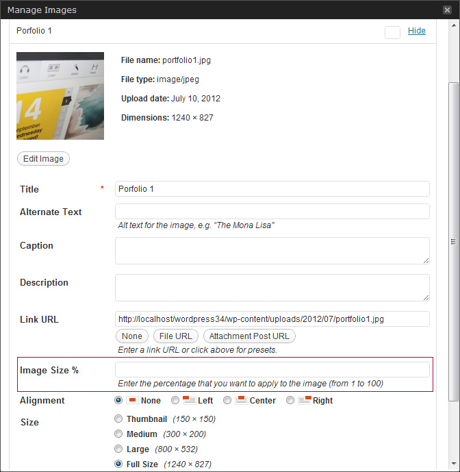
Adding VideoA portfolio item can display a Self Hosted Video, a Youtube or Vimeo video or any other video.
When selecting the Video portfolio type, a Video Settings box appears:
- If you want to display a Self Hosted video, specify both .m4v and .ogv files so that the video works in all browsers, and upload a Poster Image.
- If you want to display a Youtube or Vimeo video, enter the video's url (e.g. http://www.youtube.com/watch?v=VIDEO_ID or http://vimeo.com/VIDEO_ID).
- If you want to display a video from other sharing video website (e.g Dailymotion), enter the embed code.
- By default the video aspect ratio is 16:9. If you want to change it, enter the video's width and video's height under the Aspect ratio section.
A portfolio item can display an audio player.
When selecting the Audio portfolio type, an Audio Settings box appears.
Either you specify both .mp3 and .oga/.ogg files so that the audio works in all browsers, and upload optionally a Poster Image.
Or you use an audio sharing service e.g. SoundCloud, you need to paste the embed code.
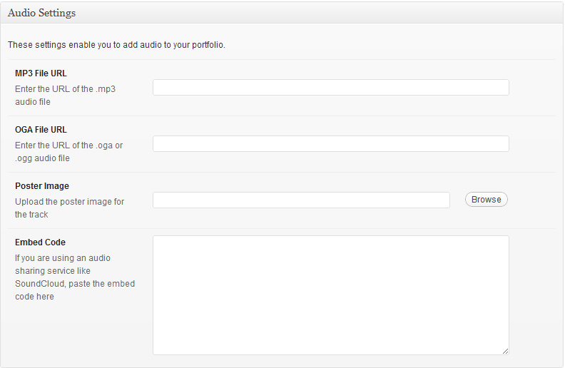
Portfolio Custom URLIf you to want to link a portfolio item to a custom URL instead of its single portfolio page, enter the url (with http:// prefix) in the Porfolio Custom URL input.
Adding Portfolio Categories (Portfolio Categories Box)To categorise your portfolio items, you can assign categories to them within the Portfolio Categories Box. Assigning categories to the portfolio items will allow the users to filter your portfolio by categories. Also the categories will be displayed when hovering each portfolio item's thumbnail (if in the Theme Options > Portfolio Settings, you have chosen to display the portfolio categories). You can create new categories by navigating to Portfolio > Portfolio Categories or you can directly create them from the portfolio item page.
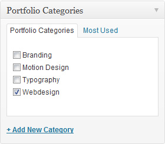
Adding ExcerptYou can enter an excerpt for each portfolio item by typing a short text inside the Excerpt box. Each portfolio item will display its excerpt when hovering each portfolio item's thumbnail, if you have chosen in the Theme Options (Theme Options > Portfolio Settings) to display the excerpt rather than the categories.
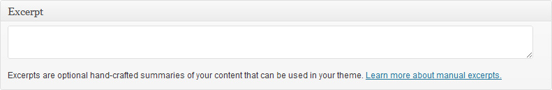
By going to Appearance > Theme Options > Gallery Settings you can configure your main gallery page.
You can use a "Load More" button if you need to display a lot of gallery items.
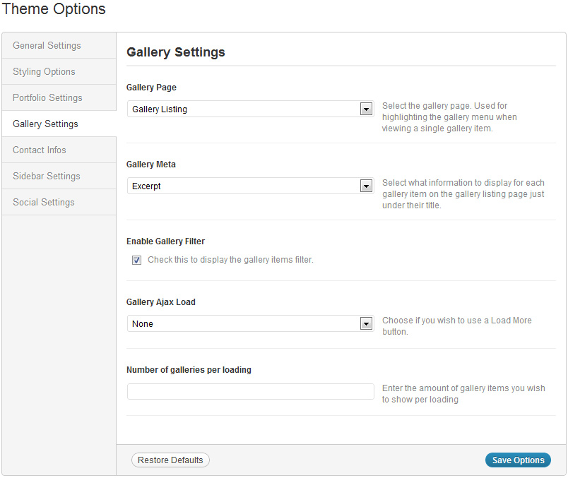
Adding Gallery ItemsTo add a new gallery item, navigate to Galleries > Add New.
Set preview imageYou have to set a "featured image" to each gallery item that will be displayed on the main gallery page. To do so, upload an image and set it as featured image. The image will be automatically cropped to the appropriate dimensions. But if you want to control exactly how it displays, upload a featured image of 400px x 225px.
Gallery TypeFor each gallery item, you have to select which type you want to display, you have the choice between "Infinite Scroll" or "Fullscreen".
A gallery item can display an unlimited number of images by retrieving all the images attached to the gallery post except the featured image.
Simply upload your images using the "Upload Images" link and set the order you want. Make sure that for the "Infinite Scroll" option you set an order for your images, otherwise issue may arise.
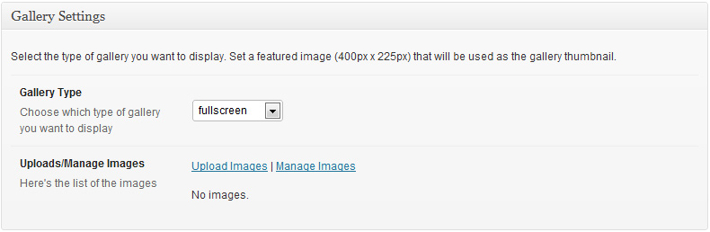
When selecting the "Infinite Scroll" option, set the number of images you want to show per loading and choose if you want to display the lightbox title.
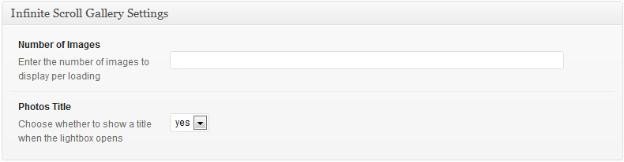
When selecting the "Fullscreen" option, set if you want to autoplay it and choose if you want to display the title on each slide.
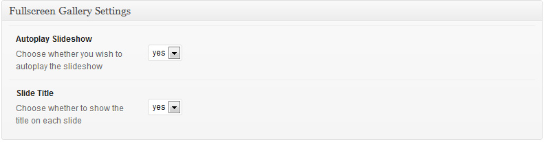
Gallery Custom URLIf you to want to link a gallery item to a custom URL instead of its single gallery page, enter the url (with http:// prefix) in the Gallery Custom URL input.
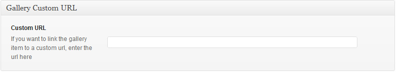
Adding Gallery CategoriesTo categorise your gallery items, you can assign categories to them within the Gallery Categories Box. Assigning categories to the gallery items will allow the users to filter your galleries by categories. Also the categories will be displayed when hovering each pgallery item's thumbnail (if in the Theme Options > Gallery Settings, you have chosen to display the Gallery categories).
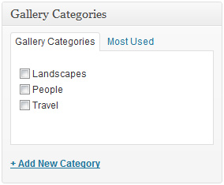
Adding ExcerptYou can enter an excerpt for each gallery item by typing a short text inside the Excerpt box. Each gallery item will display its excerpt when hovering each gallery item's thumbnail, if you have chosen in the Theme Options (Theme Options > Gallery Settings) to display the excerpt rather than the categories.
To set up the blog, create a new page, give it a title and click "Publish". Next go to Settings > Reading and configure the “Front Page Displays” setting. Select "a static page" option and choose the page you just created as your Posts page. Otherwise, if you want to display your blog page as the front page, select "Your latest posts" option. Your blog page is now ready to display your posts.
This theme comes with the following post formats: Standard, Image, Gallery, Video, Audio, Link, Quote and Status.
When creating a post, you can choose which format to use.
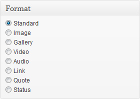
Standard
Use this format to display a standard post with only title and content.
Image
Use this format to display a post with title, content and the featured image.
When selecting the Image format, an Image Settings box appears: You can choose whether you wish to use the lightbox to display the full image on the single post.
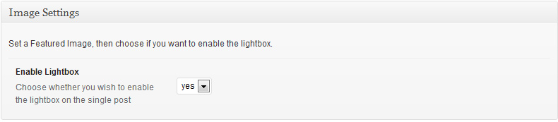
Gallery
Use this format to display an image slider along with the title and content.
When selecting the Gallery format, a Gallery Settings box appears: Upload your images. You can choose whether you wish to use the lightbox to display the full images on the single post.
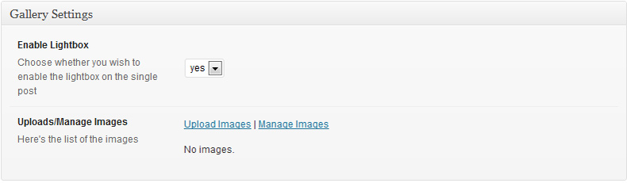
Video
Use this format to display a video along with the title and content.
When selecting the Video format, a Video Settings box appears: You have the choice between Self Hosted Video, Youtube/Vimeo or any other video.
- If you want to display a Self Hosted Video, specify both .m4v and .ogv files so that the video works in all browsers, and upload a Poster Image.
- If you want to display a Youtube or Vimeo video, enter the video's url (e.g. http://www.youtube.com/watch?v=VIDEO_ID or http://vimeo.com/VIDEO_ID).
- If you want to display a video from other sharing video website (e.g Dailymotion), enter the embed code.
- By default the video aspect ratio is 16:9. If you want to change it, enter the video's width and video's height under the Aspect ratio section.
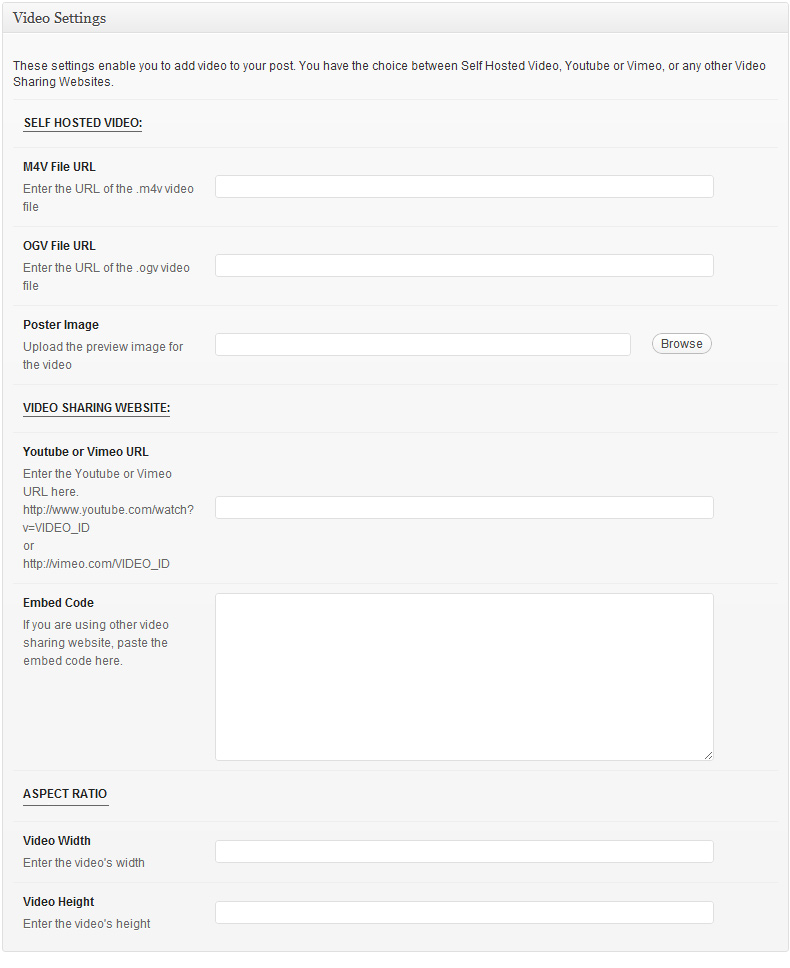
Audio
Use this format to display an audio player along with the title and content.
When selecting the Audio format, an Audio Settings box appears :
- Either you specify both .mp3 and .oga/.ogg files so that the audio works in all browsers, and upload optionally a Poster Image.
- Or you use an audio sharing service e.g. SoundCloud, you need to paste the embed code.
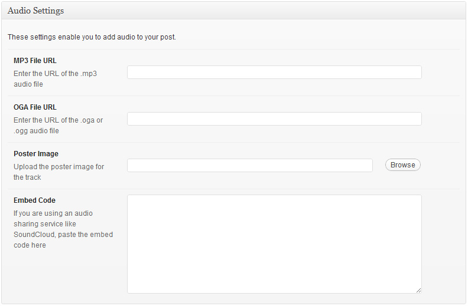
Link
Use this format to display a link along with the content.
When selecting the Link format, a Link Settings box appears: Enter the URL you wish to link the title to.
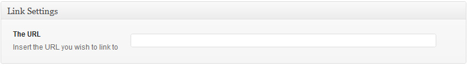
Quote
Use this format to display a quote along a source and the content.
When selecting the Quote format, a Quote Settings box appears: Enter your quote and optionally its source.
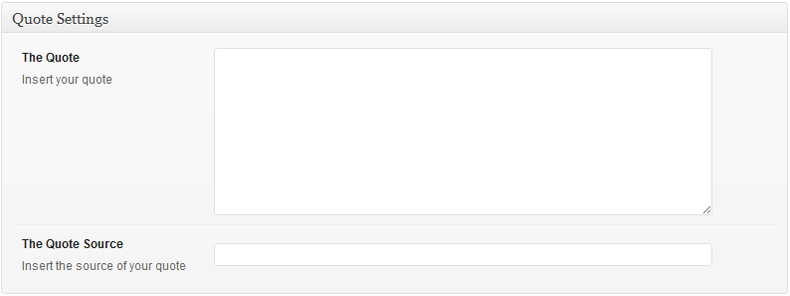
Status
Use this format to display a Tweet.
With WordPress 3.4+, you can embed a tweet simply by entering its URL in the main content editor.
This theme comes with a Gallery template that allows you to showcase your images in an infinite gallery i.e. when the user scrolls down, more images appear.
To set up a gallery, create a new page by navigating to Pages > Add New. Give it a title, select the "Gallery" template from the
Page Attributes section and click Publish.
If you want to add some introduction to the gallery, use the main editor, the text will appear in the first box before the images.
Use the Gallery Settings box to manage your gallery:
- Upload your images by using the "Upload Images" link. Make sure that you set an order for your images, otherwise issue may arise.
- You can specify the number of images per ajax loading in the "Number of Images" input.
- You can choose whether to display the title for each image when the lightbox opens.
- If you want to open a Youtube or Vimeo video within the lightbox, specify the url in the "Video Link URL" custom input (you'll only be able to see this custom input
once your page is published).
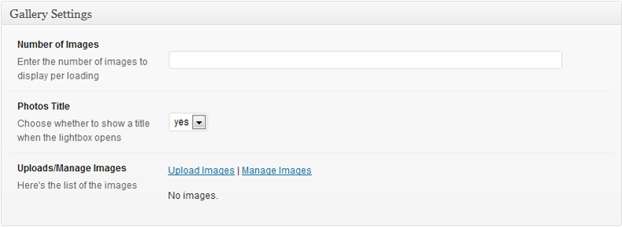
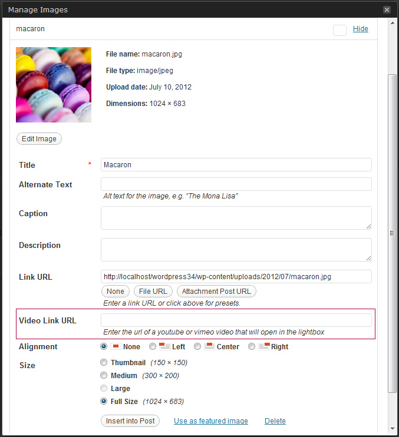
This theme comes with a Background Image template.
To set up a page with a background image, create a new page by navigating to Pages > Add New. Give it a title, select the "Background Image" template from the
Page Attributes section and click Publish.
In the Background Settings box, upload your background image.
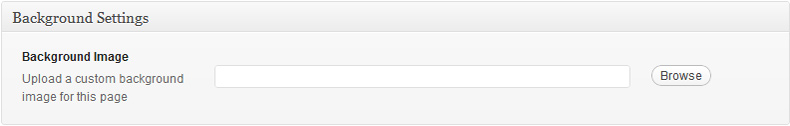
This theme comes with a Fullscreen Video template.
To set up a Fullscreen Video page, create a new page by navigating to Pages > Add New. Give it a title, select the "Fullscreen Video" template from the
Page Attributes section and click Publish.
In the Video Settings box, enter a Youtube or Vimeo URL and choose if you want to autoplay it.
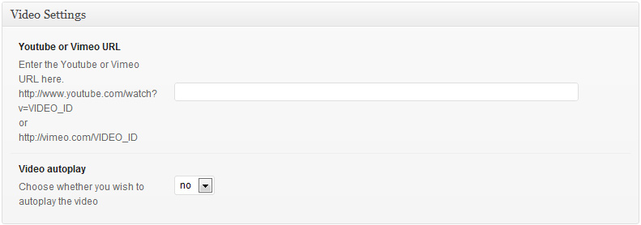
This theme comes with a Fullscreen Slider template.
To set up a Fullscreen Slider page, create a new page by navigating to Pages > Add New. Give it a title, select the "Fullscreen Slider" template from the
Page Attributes section and click Publish.
In the Slider Settings box, choose if you want to autoplay the slideshow and upload your images.
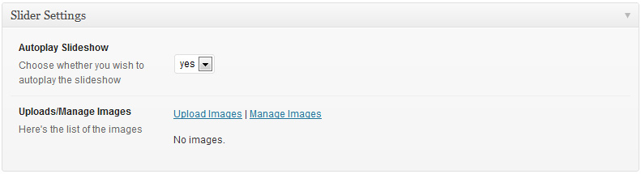
To configure the caption on each slide (content, colors, position, link button), for each image set the caption settings parameters that appear on the Media Uploader > Gallery tab (you'll only be able to see these custom inputs once the page is published).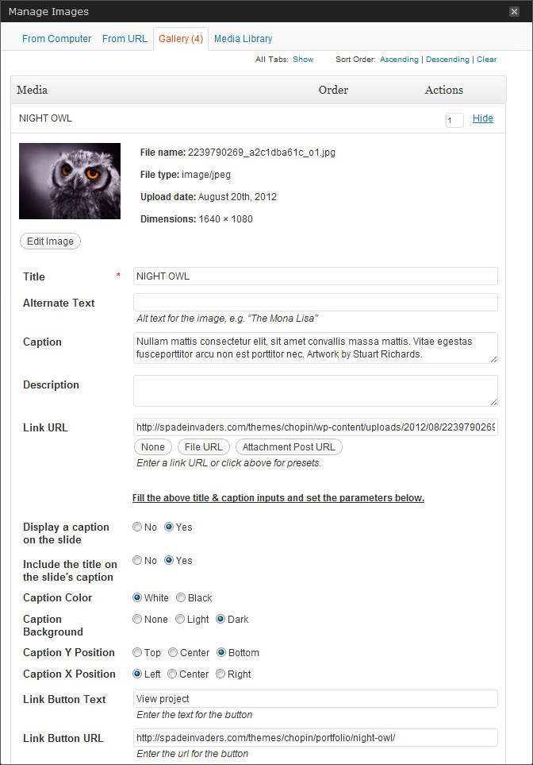
This theme comes with a Contact template. To set up the contact page, create a new page by navigating to Pages > Add New.
Give it a title, select the "Contact" template from the Page Attributes section and click Publish.
The contact page is separated in two parts. On the left it displays the content entered in the the main text editor of the page and on the right the
informations that you give in Theme Options (Appearance > Theme Options > Contact Infos).
In order to add a contact form to the website, you have to install the Contact Form 7 plugin. You can either download it from here: http://wordpress.org/extend/plugins/contact-form-7/ and activate it or go to Plugins > Add new, search for "Contact Form 7", hit Install Now and activate it. Once installed, navigate to the plugin settings page under Contact menu in order to create a form. Once you're done, copy the generated shortcode that is similar to [contact-form 1 "Contact form 1"] and paste it in your contact page.
Configure the Google Map
You can chooose to display a google map by going to Appearance > Theme Options > Contact Infos.
You need to specify the latitude and longitude of your location. To get them, type your location on Google Map. Once located, right-click on your location,
a context menu appears and click "What's Here?". Your coordinates will appear on the search input.
Next, set a zoom value (0 < zoom < 21) and select the type of the map.
Optionally, you can upload a custom marker icon. If you do so, you need to specify its size and the coordinates of its anchor.
This theme comes with an Archives template. To set it up, create a new page by navigating to Pages > Add New. Give it a title, select the "Archives" template from the Page Attributes section and click Publish.
This Theme comes with a custom menu location in the left sidebar - the Main Navigation. To set up your custom menu, go to Appearance > Menus. Create a new menu, give it a name and build it. Once built, save it and assign to the "Primary Menu" location.
In addition to the available widgets already included in Wordpress, the theme comes with 2 custom widgets, a Custom Flickr Photos Widget & a Custom Twitter Feed Widget, that can be found under Appearance > Widgets.
Custom Flickr Photos WidgetThis widget allows you to configure and display Flickr photos from a user's photostream.
This widget allows you to configure and display your latest tweets.
The theme comes with several shortcodes allowing you to add styled content to your site very easily. To add them when creating a page or post, click the "+" icon. A panel with a list of functionalities will appear, choose the one you wish to include and click "insert".
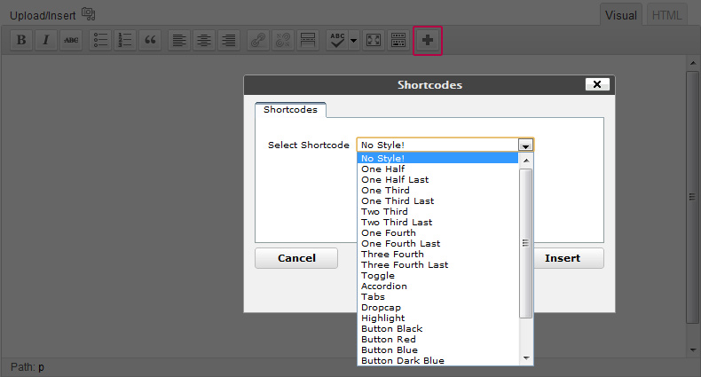
Columns ShortcodesThe content can be split into multiple columns. For example, the option "One Half" from the shortcode panel will insert the necessary code to
split the content into two columns.
Important: You must end each set of columns with a "last" option such as "one_half_last".
[one_half] Insert you content here [/one_half] [one_half_last] Insert you content here [/one_half_last]Toggle Shortcode
The toggle shortcode allows you to display your content in a container than can be toggled open/closed by the user.
[toggle title="Title goes here"] Insert toggle content here [/toggle]Accordion Shortcode
The accordion shortcode allows you to insert content into multiple containers that can be toggled open/closed by the user.
[accordions] [accordion title="Accordion 1 Title"]Insert accordion 1 content here[/accordion] [accordion title="Accordion 2 Title"]Insert accordion 2 content here[/accordion] [accordion title="accordion 3 Title"]Insert accordion 3 content here[/accordion] [/accordions]Tabs Shortcodes
The tabs content shortcode allows you to insert content into multiple tabs.
[tabs] [tab title="Tab 1 Title"]Insert tab 1 content here[/tab] [tab title="Tab 2 Title"]Insert tab 2 content here[/tab] [tab title="Tab 3 Title"]Insert tab 3 content here[/tab] [/tabs]Dropcap Shortcode
Emphasizes a letter by making it larger than the rest of the text.
[dropcap]T[/dropcap]his is a dropcapHighlight Shortcode
Highlights your text by adding a yellow background to it.
[highlight]Insert your content to be highlighted here [/highlight]Button Shortcodes
Create a button with a colored background.
[button_black url="# target="_self"]Button Text[/button_black] [button_blue url="#" target="_self"]Button Text[/button_blue]
This theme is fully localized and ready for translation. It also includes the French translation file.
In the theme files inside the languages folder, you can find default.po file.
Rename it to xx_XX.po where the 'xx' is the locale code for the language to translate to, and the 'XX' is the country code, e.g. for French: fr_FR.po.
In order to edit the file, you need to use an editor like Poedit. Translate each string and save the file.
PoEdit will automatically compile and generate a .mo file (e.g. fr_FR.mo) that is used by Wordpress for translating your messages
After that, open wp-config.php file at the root of your Wordpress website. Search for the PHP code: define ('WPLANG', ''); and replace it
with your language code e.g. :define ('WPLANG', 'fr_FR');
We're using 1 CSS file in this theme.
We've included eight psds with this theme:
We've used the following images, icons or other files as listed.
Once again, thank you so much for purchasing this theme. As we said at the beginning, we'd be glad to help you if you have any questions relating to this theme. No guarantees, but we'll do my best to assist. If you have a more general question relating to the themes on ThemeForest, you might consider visiting the forums and asking your question in the "Item Discussion" section.
SpadeInvaders